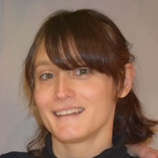

Lavinia Picollo
Assistant Professor of Philosophy, NUS

Home
|
Publications
|
Research
|
Teaching
|
Other
|
CV
Logic and its Limits
(NUS)
Gödel's First Incompleteness Theorem
(UCL), after Smith's
Gödel without (too many) tears
:
1
·
2
·
3
·
4
·
5
·
6
Rise and Fall of the Fregean Empire
(MCMP)
Tarskian Definitions of Truth
(MCMP)
Lógica I — Guía de Ejercicios
(UBA)
Lógica, Metalógica y Metametalógica
(UBA), with P. Teijeiro, 2013